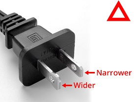

Ultrasonic Humidifier Instructions
Please read these important saftey instructions
Brief First Use Placement Instrucions

It is reccomended to plug the humidifier directly into a wall outlet to avoid risk of fire or shock
Keep humidifier out of areas where people may accidently trip over the humidifier. DO NOT place any wires or cords under rugs or near areas of increased heat due to higher risk of a fire hazard.
Locate your humidifier by a wall near an electrical outlet. The humidifier should be at least 4 inches (10 cm) away from the wall for best results.
Keep moisture outlet open for proper airflow or else the humidifier may not work as intended.
Will NOT work outside, for indoor use only
Place the humidifier on a flat surface like a firm table. Due to moisture produced a waterproof mat or pad is recommened for use under the humidifier. If placed on a rug or carpet, or on a finished floor can cause damage to specified surfaces by exposure to water or moisture.
Humidifier will not work as intended if humidity in the room is already greater than 50%.
Keep away from external water sources to avoid malfunctions.
To prevent damage to surfaces, do not place humidifier under overhanging surfaces like in a bookshelf.
Complete Instructions
When using electrical appliances, basic safety precautions should always be followed to reduce the risk of fire, electric shock, and injury to persons, including the following:
Read all instructions before using the appliance.
To avoid fire or shock hazard, plug the appliance directly into a 120V AC Electrical outlet.
Keep the cord out of heavy traffic areas. To avoid fire hazard, NEVER put the cord under rugs or near heat registers.
DO NOT place humidifier near heat sources such as stoves, radiators, and heaters. DO locate your humidifier on an inside wall near an electrical outlet. The humidifier should be at least 4 inches (10 cm) away from the wall for best results.
NEVER place humidifier in an area where it is accessible to children. Never use humidifier in a closed room, particularly where a child may be sleeping, resting, or playing (a closed room may result in excessive humidity).
WARNING: Do not attempt to refill humidifier without first unplugging the unit from its electrical outlet. Faliure to heed this warning may cause personal injury. Be sure to unplug the unit by pulling on the plug and not the cord.
Never place anything over moisture outlet when the unit is running.
NEVER drop or insert any object into any openings.
DO NOT operate any appliance with a damaged cord or plug, after the appliance malfunctions, or if it has been dropped or damaged in any manner. Return appliance to manufacturer for examination, electrical or mechianical adjustment or repair.
Use appliance only for intended houshold use as described in this manual. Any other use nt recommened by the manufacturer may cause fire, electric shock, or injury to persons. The use of attachments not reccomended or sold by the manufacturer may cause hazards.
DO NOT use outdoors
Always place humidifier on a firm, flat, level surface. A waterproof mat or pad is recommened for use under the humidifier. NEVER place it on a rug or carpet, or on a finished floor that may be damaged by exposure to water or moisture.
DO NOT allow the Moisture Outlet to directly face the wall. Moisture could cause damage, particularly to wall paper.
Humidifier should be unplugged when not in use.
NEVER tilt, move, or attempt to empty unit while it is operating. Shut off and unplug before removing the water tank and moving the unit.
This humidifier requires daily and weekly maintenance to operate appropriately. Refer to daily and weekly cleaning procedures. Use only cleaners and additives recommeneded by the manufacturer.
NEVER use detergents, gasoline, glass cleaner, furniture polish, paint thinner, or other household solvents to clean any part of the humidifier.
Excessive humidity in a room can cause water condensation on windows and some furniture. If this happenes, turn the humidifier OFF
Do not use humidifier in an area where humidity level is in excess of 50%. Use a hygrometer, available at your local retailer or through the manufacturer, to measure the humidity.
DO NOT attempt to repair or adjust any electrical or mechanical fuctions on this unit. Doing so will void your warranty. The inside of the unit contains no user servicable parts. All servicing should be preformed by qualified personnel only.
Never place housing under water flow or immerse in liquids.
Do not plug in the cord with wet hands: electric shock could result.
Do not pour water in any openings other than the water tank.
To prevent damage to surfaces, do not place humidifier under overhanging surfaces.
NEVER operate unit without water in the tank.
Do not move unit after it has been used until unit cools completely.
Use both hands when carrying full tank of water.
Consumer Safety Information
Cord and Plug Installation Safety Instructions:
The length of cord used on this appliance was selected to reduce the hazards of becoming tangled in, or tripping over a longer cord. If a longer cord is necessary an approved extension cord may be used. The electrical rating of the extension cord must beequal to or greather than the rating of the humidifier (refer to the rating information placed on the humidifier). Carea must be taken to arrange the extension cord so that it will not drape over the countertop or tabletop where it can be pulled on by children or accidently tripped over.
NOTE: This is an electrical appliance and requires attention when it is use.
NOTE: If moisture forms on the walls or windows of the room, turn off the humidifier. The room already has plenty of humidity and additional moisture may cause damage.
NOTE: DO NOT block air inlet or outlet.
Plug Information
This appliance has a polarized plug (one blade is wider than the other).
To reduce the risk of electric shock, this plug is intended to fit in a polarized outlet only one way. If the plug does not fit fully in the outlet, reverse the plug. If it still does not fit, contact a qualified electrician to install the proper outlet.
DO NOT ATTEMPT TO MODIFY THIS IS PLUG OR DEFEAT THIS SAFTY FEATURE IN ANY WAY.
FCC STATEMENT
Potential for Radio/Televsion interference
This device complies with Part 18 of the FCC Rules.
Operation is subject to the following two conditions:
This device may not cause harmful interference.
This device must accept any interference recieved, including interference that may cause undersired operation.
This product has been tested and found to comply with the limits for a Class B digital device, pursuant to Part 18 of the FCC rules.
These limits are designed to provide resonable protection against harmful interference in a residential installation. The product generates, uses, and can radiate radio frequency energy and, if not installed and used in accordance with the instructions, may cause harmful interference to radio communications. However, there is no guarentee that the interference will not occur in a particular installation. If the product does cause harmful interference to radio or television reception, which can be determined by turning the product on or off, the user is encouranged to try to correct the interference by one or more of the following measures:
Reorient or relocate the recieving antenna.
Increase the seperation between the product and the reciever.
Connect the product into an outlet on a circuit different from that to which the reciever is connected.
Consult the dealer or an experienced radio/TV technician for help.
Changes or modifications not expressly approved by the party responsible for compliance could void the user's authority to operate the equipment.